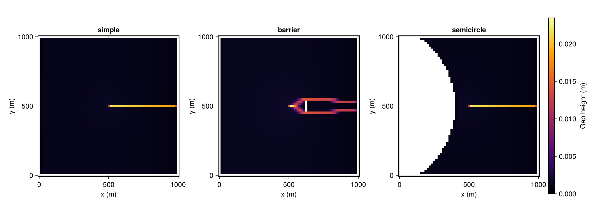

Mask variants
State.mask (see GROUNDED/OCEAN/LAND/OTHER_BASIN) is how domain geometry – not just a rectangle, but real drainage divides, ocean margins, and internal obstacles – gets into Shakti. This example builds three synthetic mask layouts for the same domain and melt-input location, to show what each mask value does to the resulting drainage pattern: a plain rectangle, one with a downstream obstacle that splits the flow, and one with an upstream barrier that reroutes it around a curved boundary.
using Shakti
using CairoMakie
const NX, NY = 65, 65 # odd, so there's a genuine center cell -- an even NY would put the moulin/barrier one cell off-center, biasing the barrier case's y-symmetry
const LX, LY = 1000.0, 1000.0
grid = Grid(NX, NY, LX, LY)
im, jm = ceil(Int, NX / 2), ceil(Int, NY / 2); # the true center cell (NX, NY odd), a moulin-like melt-input location shared by all three masksSimple
A plain rectangle: ocean outlet on the right (OCEAN), inert (zero-flux, OTHER_BASIN) boundaries elsewhere.
function simple_mask(nx, ny)
mask = fill(GROUNDED, nx, ny)
mask[end, :] .= OCEAN
mask[1, :] .= OTHER_BASIN
mask[:, 1] .= OTHER_BASIN
mask[:, end] .= OTHER_BASIN
return mask
endsimple_mask (generic function with 1 method)Barrier
The simple layout plus a downstream OTHER_BASIN obstacle that forces flow to split around it, positioned/sized relative to the melt-input location.
function barrier_mask(nx, ny, im, jm)
mask = simple_mask(nx, ny)
offset = clamp(round(Int, 0.125 * nx), 1, nx - im - 1)
ic = im + offset
halfwidth = clamp(round(Int, nx / 32), 1, min(jm - 2, ny - jm - 1))
for jc in (jm - halfwidth):(jm + halfwidth)
mask[ic, jc] = OTHER_BASIN
end
return mask
endbarrier_mask (generic function with 1 method)Semi-circle
A semicircular OTHER_BASIN region upstream of the melt input – an impassable divide the drainage system has to route around rather than through.
function semicircle_mask(nx, ny, grid, im, jm)
mask = fill(GROUNDED, nx, ny)
xm, ym = grid.x[im], grid.y[jm]
d, xc = 100.0, -200.0
R, yc = xm - d - xc, ym
for j in 1:ny, i in 1:nx
if (grid.x[i] - xc)^2 + (grid.y[j] - yc)^2 <= R^2
mask[i, j] = OTHER_BASIN
end
end
mask[end, :] .= OCEAN
mask[:, 1] .= OTHER_BASIN
mask[:, end] .= OTHER_BASIN
return mask
endsemicircle_mask (generic function with 1 method)Comparing all three
The same categorical color scheme used throughout Shakti's own plotting: light gray (GROUNDED, dynamic hydrology solved here), light blue (OCEAN, Dirichlet drainage), orange (OTHER_BASIN, frozen/no-flux) – with the shared melt-input location marked in red.
masks = (simple = simple_mask(NX, NY), barrier = barrier_mask(NX, NY, im, jm), semicircle = semicircle_mask(NX, NY, grid, im, jm))
const MASK_COLORS = Dict(GROUNDED => :gray90, OCEAN => :lightskyblue, LAND => :peru, OTHER_BASIN => :orange)
const MASK_NAMES = Dict(GROUNDED => "GROUNDED", OCEAN => "OCEAN", LAND => "LAND", OTHER_BASIN => "OTHER_BASIN")
const MASK_ORDER = [GROUNDED, OCEAN, LAND, OTHER_BASIN]
const MASK_CMAP = cgrad([MASK_COLORS[k] for k in MASK_ORDER], categorical = true)
fig = Figure(size = (1200, 450))
for (col, (name, mask)) in enumerate(pairs(masks))
ax = Axis(fig[1, col], title = string(name), xlabel = "x (m)", ylabel = "y (m)", aspect = DataAspect())
heatmap!(ax, grid.x, grid.y, mask, colormap = MASK_CMAP, colorrange = (-0.5, 3.5))
scatter!(ax, [grid.x[im]], [grid.y[jm]], color = :red, markersize = 10)
end
Legend(fig[2, 1:3], [PolyElement(color = MASK_COLORS[k]) for k in MASK_ORDER], [MASK_NAMES[k] for k in MASK_ORDER],
orientation = :horizontal, tellwidth = false, tellheight = true)
fig
Running each mask to (quasi-)steady state
The mask alone only sets up the domain – to see what it actually does to the drainage system, each variant is run under the same synthetic slab geometry and melt input (a point-source moulin at the shared location above) for tsteps = 24*24 hourly steps (dt = 3600 s, 24 days), Shakti's usual settings for a short exploratory run.
const DT, TSTEPS = 3600.0, 24 * 24
function run_to_steady_state(mask)
p = ModelParameters()
mi = ConstantMeltInput()
sl = RegularizedCoulombSlidingLaw(0.25)
A_visc = fill(5e-25, NX, NY)
zb = repeat(reshape(-0.02 .* grid.x, NX, 1), 1, NY) # slab sloping down toward the outlet
zs = zb .+ 500.0
b = fill(0.01, NX, NY)
G = fill(0.06, NX, NY)
ub_x = fill(1e-6, NX + 1, NY)
ub_y = zeros(NX, NY + 1)
taub_x = zeros(NX + 1, NY) # unused: RegularizedCoulombSlidingLaw recomputes taub from N/ub every Picard iteration
taub_y = zeros(NX, NY + 1)
# Moulin input spread over a fixed physical footprint (rather than a single cell), so the
# total flux doesn't depend on grid resolution. (## here, not #: an indented single-# comment
# is still a Literate.jl markdown-boundary line regardless of indentation, which would split
# this function's body into broken, non-executing code chunks.)
ieb = zeros(NX, NY)
xm, ym = grid.x[im], grid.y[jm]
footprint = [(grid.x[i] - xm)^2 + (grid.y[j] - ym)^2 <= 15.0^2 for i in 1:NX, j in 1:NY]
ieb[footprint] .= 3.0 / (count(footprint) * grid.dx * grid.dy) # 3 m^3/s total moulin input
state = State(grid)
set_initial_conditions!(state, grid, p, sl, mask, A_visc, zb, zs, b, G, ub_x, ub_y, ieb, taub_x, taub_y)
ls = CholeskyDirectSolver(grid)
ps = PicardSolver(500, 1e-6, ls, grid)
sim = Simulation(grid, state, TSTEPS, floattype(DT), p, "implicit", String[], mi, sl; ps = ps)
run!(sim)
return state
end
final_states = map(run_to_steady_state, masks);Gap height b at the end of the run: the moulin carves out a channel that threads through (simple), around (barrier), or is entirely reshaped by (semicircle) each mask's geometry.
fig_b = Figure(size = (1200, 450))
b_range = (0.0, maximum(m -> maximum(Array(m.b)), final_states))
for (col, (name, state)) in enumerate(pairs(final_states))
ax = Axis(fig_b[1, col], title = string(name), xlabel = "x (m)", ylabel = "y (m)", aspect = DataAspect())
grounded = masks[name] .== GROUNDED
field = ifelse.(grounded, Array(state.b), NaN)
hm = heatmap!(ax, grid.x, grid.y, field, colormap = :inferno, colorrange = b_range, nan_color = :transparent)
col == 3 && Colorbar(fig_b[1, 4], hm, label = "Gap height (m)")
end
fig_b